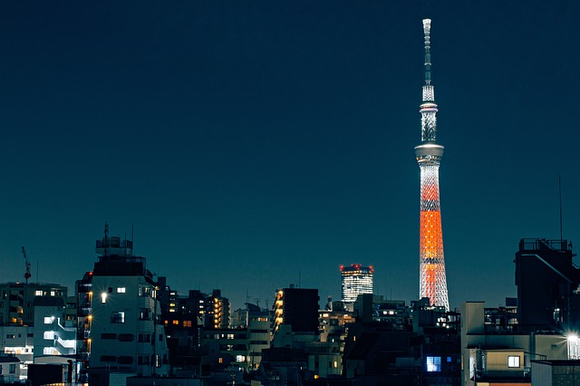
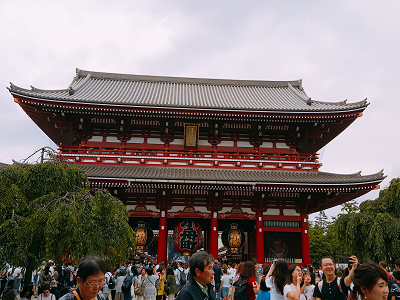

|  | 스카이트리 도쿄 스카이 트리는 일본 도쿄도 스미다 구에 세워진 전파탑이다. 본래 높이 610.58m로 계획되었으나2009년 10월에 높이 634 m로 설계가 변경되어, 캐나다의 CN 타워와 중국의 광저우타워를 제치고 세계에서 가장 높은 자립식 전파탑이 되었다. 주소: 1 Chome-1-2 Oshiage, Sumida City, Tokyo 131-0045 일본 높이: 634m 지상층수: 29 영업시간: 오전 8:00~오후 9:00 홈페이지: www.tokyo-skytree.jp/kr/ 가격: 홈페이지 참조 |
| 센소지 센소지(일본어: 浅草寺, 천초사. Sensoji(Temple))는 일본 도쿄도 다이토 구 아사쿠사에 있는 절로 도쿄에서 가장 큰 사찰이다. 628년 스미다 강에서 백제인 히노구마 어부 형제가 던져놓은 그물에 걸린 관음상을 모시기 위해 사당을 지었다. 이후 승려 쇼카이가 645년에 절을 세운 것이 센소지의 유래로 알려져 있다. 에도 시대 후반에는 사원 내의 상점가와 연극 무대가 설치되어 있기도 했다. 그러나 관동 대지진과 2차 세계 대전 당시 대부분의 건물이 소실되고 현재의 건물들은 1960년 이후에 재건한 것이다. 주소: 2 Chome-3-1 Asakusa, Taito City, Tokyo 111-0032 일본 영업시간: 4월-9월 6:00-17:00 10월-3월 6:30-17:00 정기휴무/휴업일: 무휴 홈페이지: www.gotokyo.org/kr |
 |
| 메이지 신궁 메이지 신궁는 일본 도쿄도 시부야 구에 위치한 신사로 메이지 천황과 그의 아내 쇼켄 황태후의 영혼을 봉헌한 곳이다. 1912년 메이지 천황이, 1914년에 쇼켄 황태후가 각각 사망하자 일본의 국내 여론은 격동의 일본 근대사의 상징인 두 인물을 배향하기를 바랐다. 주소: 1-1 Yoyogikamizonocho, Shibuya City, Tokyo 151-8557 일본 영업시간: 오전 5:00~오후 6:00 홈페이지: www.gotokyo.org/kr |